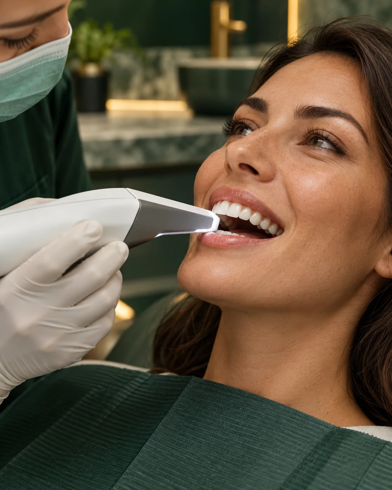
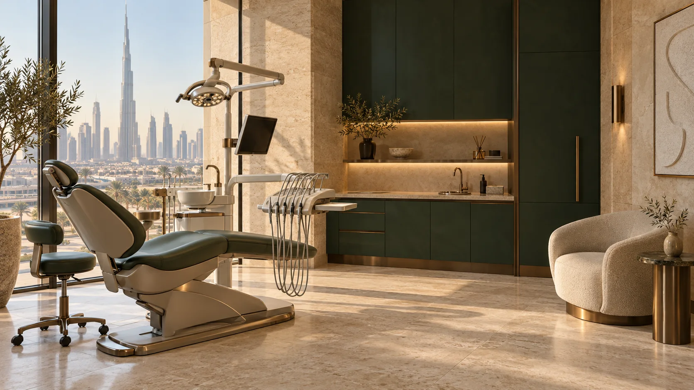
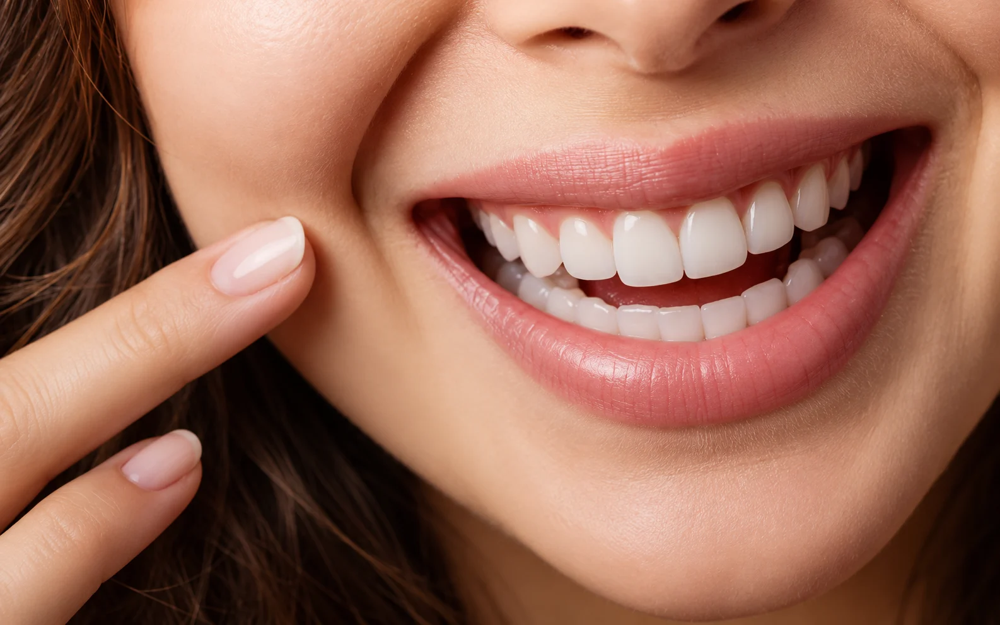

Start with an examination
A dentist can assess the concern, explain suitable options and recommend the right next appointment.
Dental services in Downtown Dubai
Preventive, restorative, surgical and cosmetic dental care connected by one clear plan.

A dentist can assess the concern, explain suitable options and recommend the right next appointment.
For multi-step care, we outline the order, likely timing, aftercare and fees before you begin.
For pain, swelling or a broken tooth, call +971 4 555 0188.
Choose a service to learn what it addresses, what the appointment involves and what to ask your dentist.
Restore
Tooth-coloured restorations for cavities, small fractures and worn areas, planned to preserve healthy tooth structure.
Brighten
Dentist-led whitening selected around your current shade, sensitivity and the type of discolouration.
Treat
Assessment, extractions and surgical dental care with practical preparation and aftercare guidance.

Replace
Implant planning for one or more missing teeth, with attention to bone, gum health, function and the final restoration.

Align
Clear aligner treatment planned digitally for suitable adult and teen orthodontic concerns.
Begin
A complete first step for new concerns, preventive planning or when you are unsure which service is appropriate.
A useful plan answers four questions: what is happening, why it matters, what the options are and what comes next.
Share the concern, your goals, relevant medical history and any previous dental experiences that affect your comfort.
Your dentist examines the area and recommends imaging only when it adds useful clinical information.
We explain benefits, limitations, likely timing, aftercare and fees so you can make an informed decision.
Treatment begins only after questions are answered and you understand the plan.
If you have no urgent pain, a comprehensive examination is usually the most useful starting point. For a specific cosmetic or implant goal, you can book a consultation focused on that concern.
Yes. When care involves more than one service, the dentist can sequence treatment around urgency, healing, function and your schedule.
The clinic discusses the proposed treatment and expected fees before care begins. Complex plans may be presented in stages.
Call first, describe your symptoms and bring details of current medicines and relevant medical conditions. The team will tell you if any additional preparation is needed.